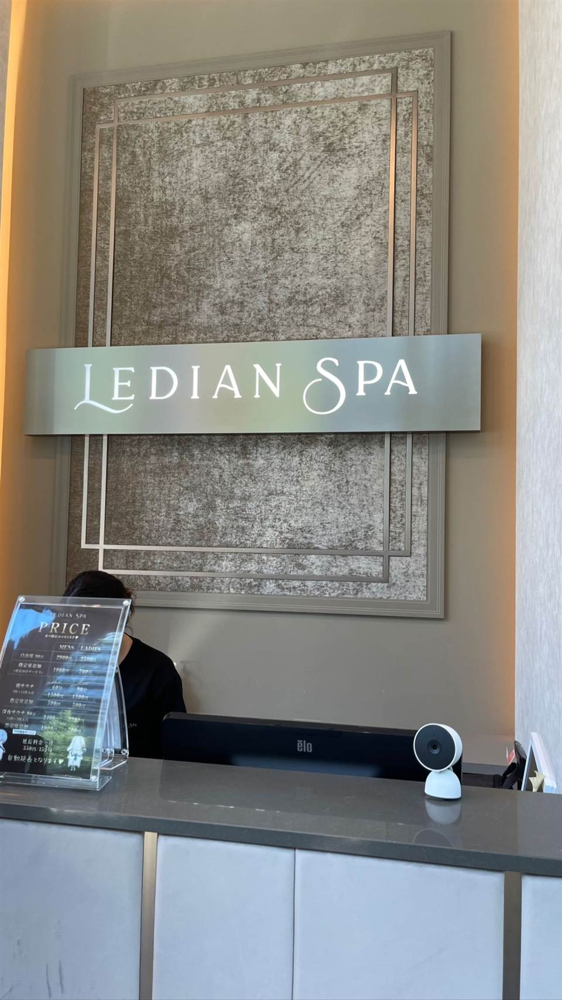
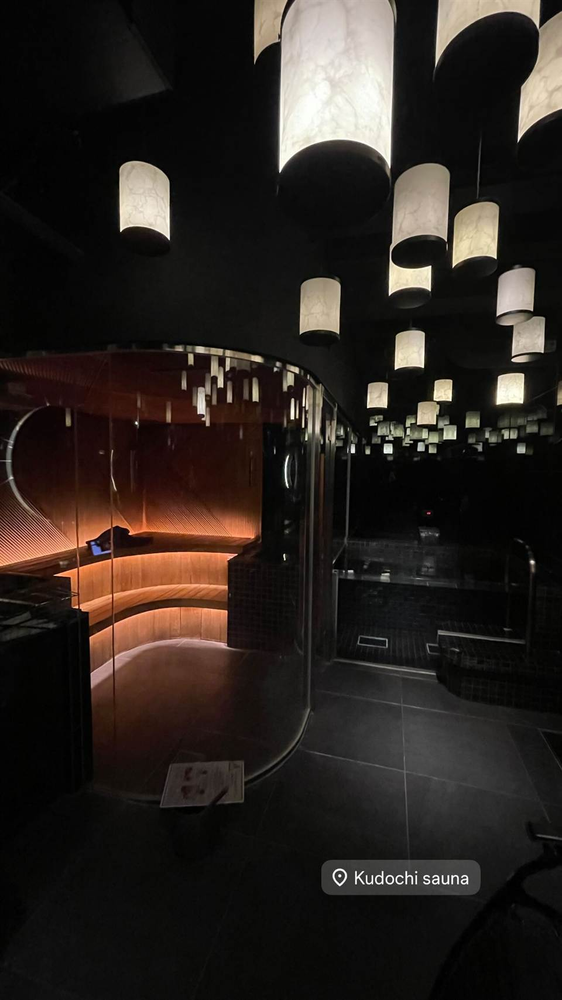
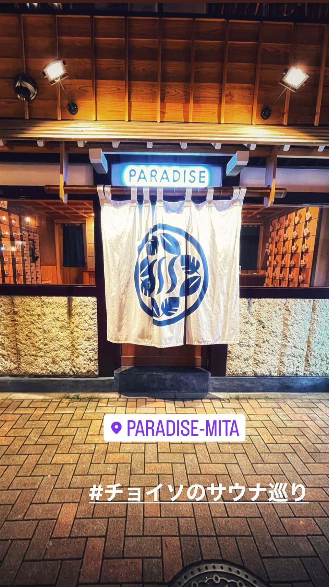

サウナ専門 · 西麻布
アダムアンドイブ（adam・eve）
男女別（アダム／イブ）のあかすり・マッサージ・カイロプラクティック・経絡マッサージ専門店。韓国の家庭料理を楽しめるスペースもある
西麻布にある韓国式あかすり・マッサージ専門店で、男性フロア「アダム」と女性フロア「イブ」に分かれているのが名前の由来。24時間営業で、あかすりやドライサウナ、よもぎスチームサウナなどでじっくり汗を流せる。
TRIVIA
豆知識
- 24時間365日営業
- 施設名は男性フロア「アダム」・女性フロア「イブ」に由来する
| 種類 | サウナ専門（韓国式あかすり・マッサージ） |
|---|---|
| 利用 | 男女とも |
| サウナ | ドライサウナのほか、よもぎを使ったスチームサウナあり。男性専用「アダム」・女性専用「イブ」でフロアが分かれる |
| 料金 | 3,990円（7時間コース） |
| 営業時間 | 24時間営業、年中無休 |
| 場所 | 六本木駅（徒歩8分程度）／広尾駅 東京都港区西麻布3-5-5 |
OFFICIAL
館内の様子
NEARBY
近い施設・同じ種類
-
 サウナ専門 池袋駅
サウナ&ホテル かるまる池袋
男性専用
男性専用のサウナ特化ホテル。4種のサウナと個性の異なる複数の水風呂を備え、そのまま宿泊も可能
サウナ 93℃
3,480円
サウナ専門 池袋駅
サウナ&ホテル かるまる池袋
男性専用
男性専用のサウナ特化ホテル。4種のサウナと個性の異なる複数の水風呂を備え、そのまま宿泊も可能
サウナ 93℃
3,480円
-

サウナ専門 LEDIAN SPA（恵比寿店／麻布十番店。写真のみでは支店を特定できず） 水着・タオル無料レンタル、クレンジングや化粧水などアメニティ充実（恵比寿店）。麻布十番店はカップル・グループ向けの完全個室でコールドプランジ付き サウナ 110℃ 水風呂 15℃ 恵比寿店：朝サウナ自由席1,500円 -
 サウナ専門 静岡駅（バス利用）
サウナ しきじ
館内すべてに駿河湾水系の天然湧水を使用、水風呂の水は蛇口から直接飲んだり持ち帰ったりできる
サウナ 110℃ 水風呂 20℃
平日1,400円
サウナ専門 静岡駅（バス利用）
サウナ しきじ
館内すべてに駿河湾水系の天然湧水を使用、水風呂の水は蛇口から直接飲んだり持ち帰ったりできる
サウナ 110℃ 水風呂 20℃
平日1,400円
-

サウナ専門 銀座駅／新橋駅 KUDOCHI sauna 銀座店 QRコードで解錠する非接触・非対面のチェックイン、部屋ごとに音楽・香り・明るさを調整できるセルフロウリュ サウナ 85℃ 水風呂 14℃ スタンダード90分6,000円〜（120分8,000円） -

サウナ専門 田町駅・三田駅 PARADISE（パラダイス） 男性専用 築90年の銭湯「万才湯」をリノベーションした施設。極楽浄土をイメージした空間デザイン。男性専用施設（レディースデーは不定期）、完全キャッシュレス決済 水風呂 16℃ 一般入浴（平日）最初の30分1,000円・以降10分ごと250円 -
 サウナ専門 上野駅（浅草口徒歩1分）
サウナ&カプセルホテル 北欧
男性専用
男性専用施設。露天風呂での外気浴、館内に漫画2,000冊、名物の北欧特製カレー。カプセルホテルも併設
サウナ 110℃ 水風呂 14℃
3時間コース2,000円（休前日・土日祝2,200円）
サウナ専門 上野駅（浅草口徒歩1分）
サウナ&カプセルホテル 北欧
男性専用
男性専用施設。露天風呂での外気浴、館内に漫画2,000冊、名物の北欧特製カレー。カプセルホテルも併設
サウナ 110℃ 水風呂 14℃
3時間コース2,000円（休前日・土日祝2,200円）